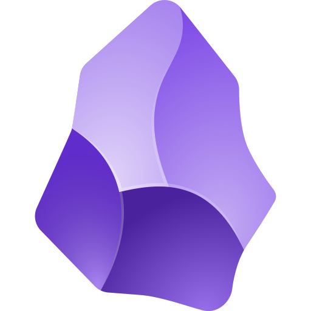

为什么选择它
一条对话
一篇长文
一段字幕
一处划线
一条笔记
散落。 读过的内容，分散在���十个未关闭的标签页中。
收拢。 一键保存，汇聚到同一处。
取用。 需要时，随时回到你自己的笔记中。
在阅读时即保存，而非事后四处查找。
开源浏览器剪藏 · 本地优先
AI 对话、网页文章、视频字幕，一键存入 Notion、Obsidian 或飞书。开源、本地优先，数据始终归你所有。
使用其他浏览器？可在下方选择 Chrome / Edge / Firefox 版本。
采集范围
覆盖 ChatGPT、Claude、Gemini、DeepSeek、Kimi、豆包、元宝、Poe、Notion AI、z.ai 共 11 个平台，另支持 Google AI Studio。完整对话，原样保存。
一键提取任意网页正文，并保留标题、作者与发布时间。微信公众号、小红书图文均已专门适配。
抓取 YouTube、Bilibili 的字幕，完整保留时间戳。
打开支持的页面即自动采集，并记录上次的位置，仅增量保存新内容，不重复、不遗漏。
同步去向

OAuth 一键授权，自动创建数据库，AI 对话、网页与视频分类归档。

通过 Local REST API 直接写入本地 vault，全程不经过网络。
OAuth 授权，一键同步至飞书云文档（DocX），按类型分类整理。
也可随时导出 Markdown 或 Zip 备份，完整带走。
实际界面


为什么选择它
散落。 读过的内容，分散在���十个未关闭的标签页中。
收拢。 一键保存，汇聚到同一处。
取用。 需要时，随时回到你自己的笔记中。
在阅读时即保存，而非事后四处查找。
隐私 & 开源
内容首先存储在浏览器的 IndexedDB 中，是否同步至别处，完全由你决定。
备份自动排除 OAuth 令牌；没有第三方服务器，也不会下载或执行任何远程代码。
每一行代码都在开源仓库中，随时可导出离开，绝不锁定。
由个人独立开发与维护，活跃于 linux.do 与 GitHub。